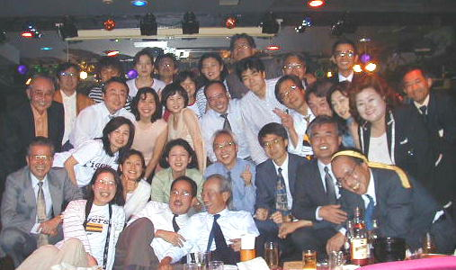
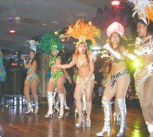
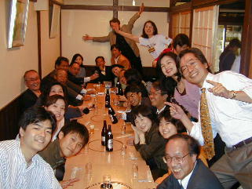
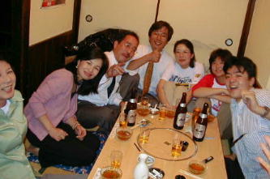

盛り上がった様子を映像でお楽しみ下さい(撮影協力 高嶋さん48卒)

強烈なサンバのリズムが会場内に響く。
スポットライトを浴びたステージ上では、サンバの羽根飾衣装をつけた10人近いダンサーがサンバのリズムに乗って激しく踊る。
背部につけられた羽根飾りも、ある時は小刻みに揺れ、ある時は大きな円を描いて、激しい体の動きに呼応する。サンバのリズムが体から発散する。
こんなステージを楽しみながらの
第10回高高神田会「サンバを通してブラジル文化を肌で感じる夕べ」
が、今年の5月18日、新宿のショウクラブ「ニューポアント」を2時間貸切って行われた。

ショウクラブのステージに、ブラジルでカーニバル参加の経験のある藪崎千鶴子さん(50年卒)が、講師として登場。客席に座る30人の参加者に、ブラジルの地理、サンバの歴史、リオのカーニバル(Carnaval de Rio) でのカーニバルの盛り上がりぶり、リオ(Rio ﾋｵと発音するとのこと)とサンパウロなどのカーニバルの違い、サンバ音楽などの説明がある。
講師から戴いた資料によれば、カーニバルは16世紀にポルトガルからの移民によって始まり、当初は町を歩く人たちに水や粉や卵やトマトを投げ合うというお祭りであったが、19世紀中頃には一時鎮圧されたこともあったそうである。
しかし、150年程前にリオで仮装した若者が打楽器を叩きながらのパレードを行い、これを起源としてリオのカーニバルが始まった。
また、サンバ音楽は、アフリカ音楽とキューバ音楽などの外国音楽と合わさって、カーニバルのサンバが確立したとのことである。
そんな歴史があったのだ。
サンバ・カーニバルも、文化の衝突というものが、新しい素晴らしい文化を創造するという一つの例でもあるのだ。
講演の後は、参加者が実際にサンバのリズムで踊りの稽古なのだ。
金太郎ならば熊に股がりお馬の稽古なのだが、我々は、美女のダンサーにまたがる訳にもいかず、単に手を引かれてのサンバの稽古だ。
ダンスの得意な者も、「踊りや言うても"一合まいた"しか知らんぞ」という者も、ブラジル娘からステップを教わり、サンバの音楽に合わせて、リズムにのろうとする。
唯、手足がバタバタしているだけの者も、私だけではない。
今回の企画をした中山君(50年卒)、小山君(53年卒)のヒゲコンビも、それに動員を担当した和田さん(50年卒)、小島さん(43年卒)も、なぜか阪神タイガースのハッピを着て大声で盛り上がりを応援している。
ところで、今回の「サンバを通じてブラジル文化を肌で感じる夕べ」という企画をしたのは、前述のヒゲコンビ(中山、小山)である。
このヒゲコンビとハゲコンビが今回の企画実行をし、実際の会合前に、ショウを見ては盛り上がり、打ち合わせ会と称しては飲んで盛り上がった。
このように一部では、会合前の準備会から相当に盛り上がっていた。
その準備会では、中山君は、網タイツに決めパンの赤いパンツを着用して盛り上がるとのことであったが、当日はそこまではやっていない(彼にも少しは羞恥心が残っていたのだ)。
また当初の予定では、講師もサンバ衣装で講義をする予定であったが、藪崎講師も、ダンサーに遠慮して、サンバ衣装はつけてない。
また、当初の約束では、小島女史も衣装をつけて「ハジケル踊り子」として活躍し、網タイツ、赤パンの「ハゲテル踊り子」に対抗して会場を盛り上げる予定であったが、これらのお約束も、「そこまでは勘弁してね」と遠慮している。
会場では、最初は高高卒だけに、やはり羞恥心を捨てきれないで、踊りの参加に躊躇する者が多かった。
とすると会場は、少し盛り上がりが少ないかとお思いになるかも知れない。
しかし、そうはいかないのが神田会。
徐々に、会場の殆ど全員がサンバの輪に参加しはじめる。
羞恥心も踊り子に手を引かれるだけで、直ぐになくなってしまうのだ。
まあ、たいした羞恥心でもないわけである。
一番年長の久保先輩(27年卒)や佐藤先輩(27年卒)を始め、37年の喜岡君、47年の辻君も、49年の岩崎君も、50年の淵崎君もサンバのステップを踏んでいる。
平成以降の卒業の若い早川君、太田さん、内田さん達も若者らしく、中年の「手足バタバタ踊り」「盆踊りかいな?踊り」とは明らかに違う「サンバかも知れない踊り」を楽しんでいる。
高島監督(48年卒)は、映像担当として、ステージ一杯に踊っている仲間の撮影である(と思いきや、映っていたのは、美人の踊り子さんを中心とした映像であった、とのこと。さすが監督である)。
このインターネット上の報告に、映像が添付されるかどうかは分からないが、添付されるとしても踊り子さんの映像は、著作権や肖像権処理の関係で、残念ながら多分省略されているに違いない。
映像を見れば本当に踊り子も参加者も美人揃いであるのが分かるのであるが残念である。
踊り子が美人であるというのが嘘だと思うなら、新宿のニューポアントに行ってらっしゃい。
リーズナブルな料金で美人の踊りが楽しめますよ(と、会の終了後の精算で、金が足りなくなって周支配人に勉強して貰ったので、宣伝もしておくことにする)。
少し遅れた参加の大西先輩(33年卒)は、この会場の雰囲気に唖然としたのか、ダンスに参加せずに、「お前ら、よおやるのー」とばかりにニコニコしている。
ともかくリズムを感じながら体を動かすのは久しぶりである。
他人がどう言おうと、盛り上がる。
それが我々のサンバなのだ。
音楽を聴きながら、体を動かし汗をかく、というのは、爽快である。
我々は、こういう感触を都会生活の中で忘れてしまったのでないか。
人としての本能を忘れてしまった私たちは、よほど不幸な民族ではないか。
ひょっとすると最近の日本社会が抱える問題の根源は、こんなところに本質的な問題があるのではないか。
最近の17歳の少年問題も、警察の不祥事も、全て、このように体を動かす喜びすらを忘れてしまった愚かな民族が当然受けるべき神の制裁なのだ。
そんな気すらしてくる。
客席に戻って、つまみに酒を呑みながら、暫し高松弁の会話をしていると、ショウタイムが始まった。
ショウは、前述のサンバのみでなく、欧米のショウ風の踊りも加わり、少し大人の時間になる。
ダンサーの総勢15名。そのダンサーが交代して、狭いステージ上をダイナミックに踊りを披露する。
或る者が、間違って、今回のショウをストリップショウと期待していたようであった。
しかし、そんなストリップショウはない。
我々の神田会、そんなストリップショウなどを皆で見ようなんて企画はしない。
そんなショウは、一人で行くものである。皆で見るものではない。
あくまでも欧米風の品の良いダンスショウなのだ。
と言っても、均整のとれた体で、露出した長い足を惜しみなく動かし、リズムにのせて腰部を震わせると、結構セクシーであると満足していた者もいたので、それなりに煽情的でもあった。
18世紀のパリ万博で、エジプトからのベリーダンスが欧米人に衝撃を与え、それ以降、肢体を見せるショウが欧米に普及したというのは、荒俣さんのストリップの起源に関する説である。
確かに音楽に合わせて肢体を見せるというのは、ショウ足り得るものである、と実感もできた。
(ヨーロッパでは寒さのせいで肢体を見せて踊るという文化が生まれなかったのが、エジプト、中近東のベリーダンス文化に接して、ショウなどを作ったのであろう。これも文化の衝突とも言える。そして、それをストリップ・ショウなどの文化にしたのだから、欧米人も20世紀中に、中々の文化人になってきたと言えるであろう)
このダンサーの踊りがえらく気に入った者も少なからずいたようでもあったが、誰がどのダンサーを気に入ったとか、誰かが一生懸命にダンサーと話込んでいたなどいうような話は、ここではこれ以上触れない(従って、私がマリアンを口説いていたかどうかという疑惑についても、これ以上は触れられないし、釈明もできない)。
ともかく2時間の貸切時間があっという間に過ぎて、最後は、再び、参加者とダンサー達の全員参加の踊りである。
踊りの輪が会場内をくるくる回り、大声で騒いで、最後に歓声を上げて、本日の高高神田会「ブラジル文化を肌で感じる夕べ」は打ち上げである。
２時間でサンバを打ち上げた後は、渋谷に移動して、渋谷警察裏にあるうどん「高松」で二次会を行う。

この間の移動は、殆どの者はタクシーであるが、早川君(平成6年卒)は乗ってきたバイクで移動だ。後ろに小山君を乗せて、タクシーに並走する。
天気の良い5月、バイクで都会を疾走するのは気持ち良さそうである。
二次会には、一次会参加の殆どの者が参加し、更に、大喜多君(51年卒)、佐藤さん(51年卒)、松野君(53年卒)、長尾さん(53年卒)など、真面目に仕事をしていた人が新たに参加した。
三崎屋先輩のように他所の宴会を終えて、念のために二次会会場を覗いたら、二次会は終わってなくて、それどころか大盛り上がりで、「お前らまだやっとるんか。ほんまにようやるのお」と参加される方もいて、25名が定員の座敷は、30名を超える者で溢れんばかり。
入江君などは通路の椅子席まで溢れて日本酒をやっている。
座敷も椅子席も大声で高松弁が飛び交う大賑わい。

どうして、こんなに皆んな大きな声で話して、大笑いをするのだろうと、不思議になる程の盛り上がりである。
最後に釜上げうどんを食して(足らんぞーという意見が多く、追加に追加を重ねて)、「やっぱり高松人は、うどんがすきやのー」と言いながら、二次会も終えた。
その後一部有志は、地元の辻君(51年)の案内で、宮地君らの同期を中心に、土居君なども混じって、三次会をカラオケで楽しんだそうである。
サンバにうどんの会という、冷静に考えれば、何だか訳の分からない会合を盛大に終え、「高高神田会」の盛り上がりは、まだまだ続きそうである。
なお、夏には、
「ベルギービールを楽しみながら、ベルギーちゅうのはどこにあるんや、というようなアホなことを言う奴は参加できない会(第11回高高神田会)」
が佐藤ベルギービール広報官の企画の下で開催される予定である。
(日時が決まり次第、インターネットでも掲示される予定です)。
ベルギービールでも大いに盛り上がろう。
文責 岡崎洋、連絡03-5282-8615 cxl02735@nifty.ne.jp